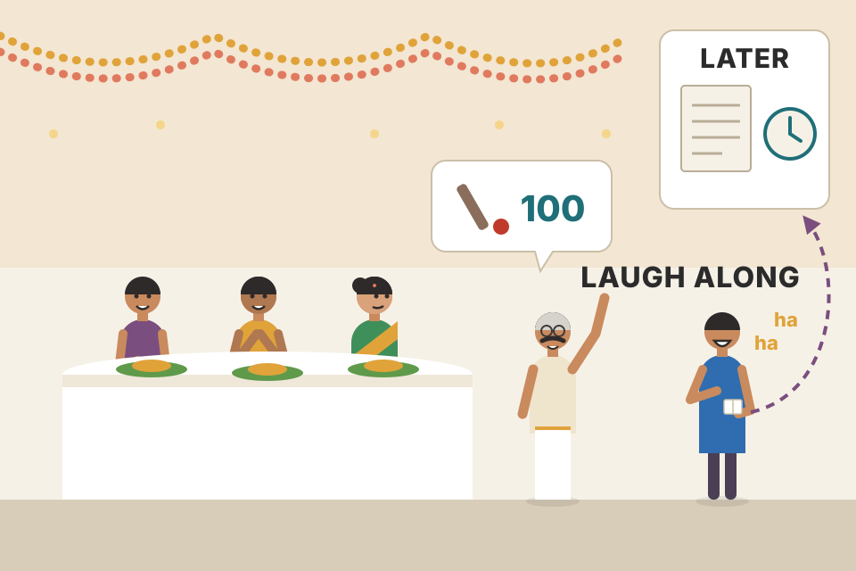
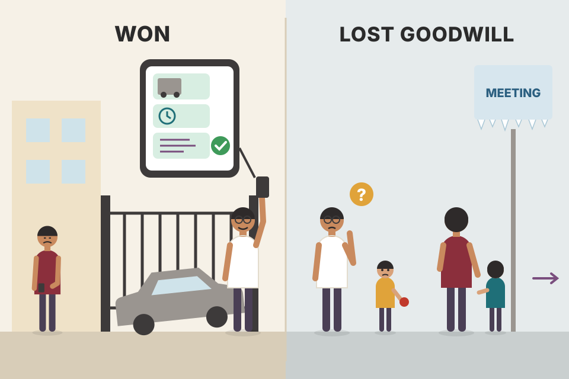
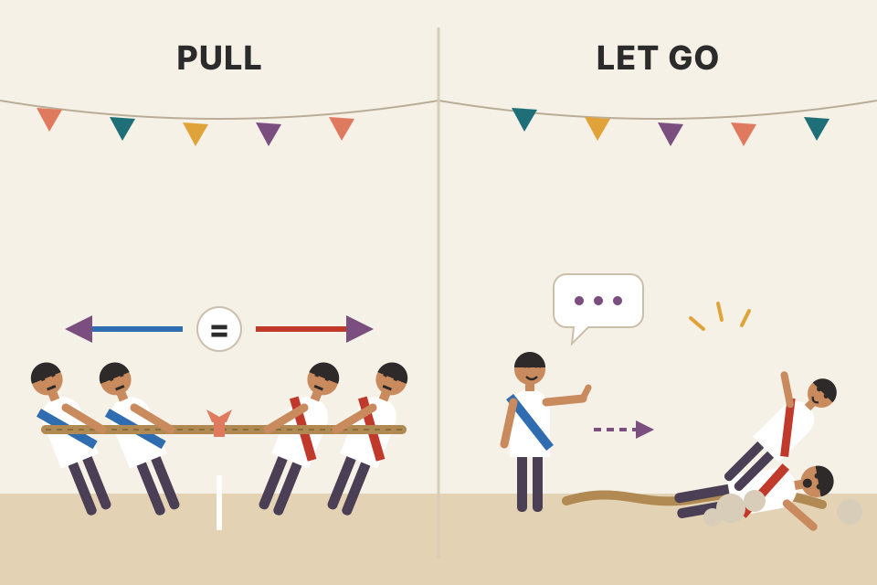
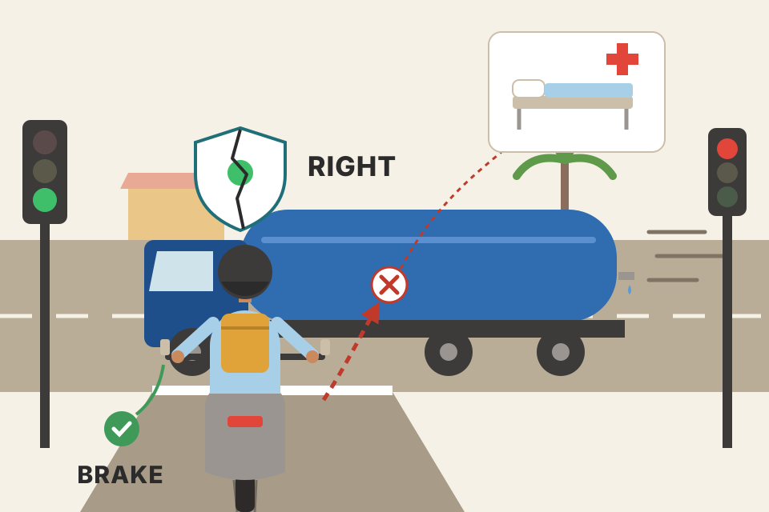
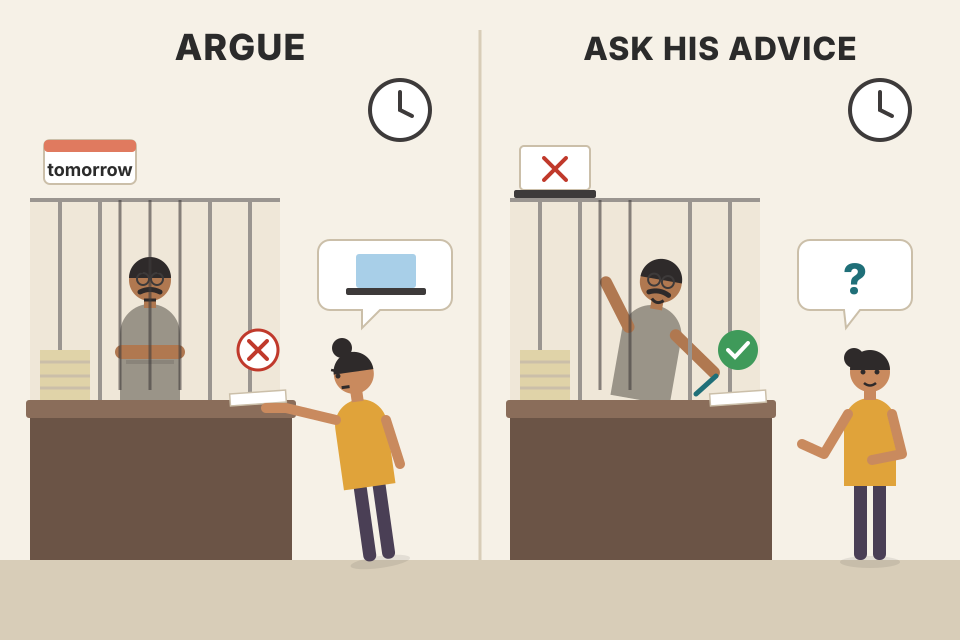
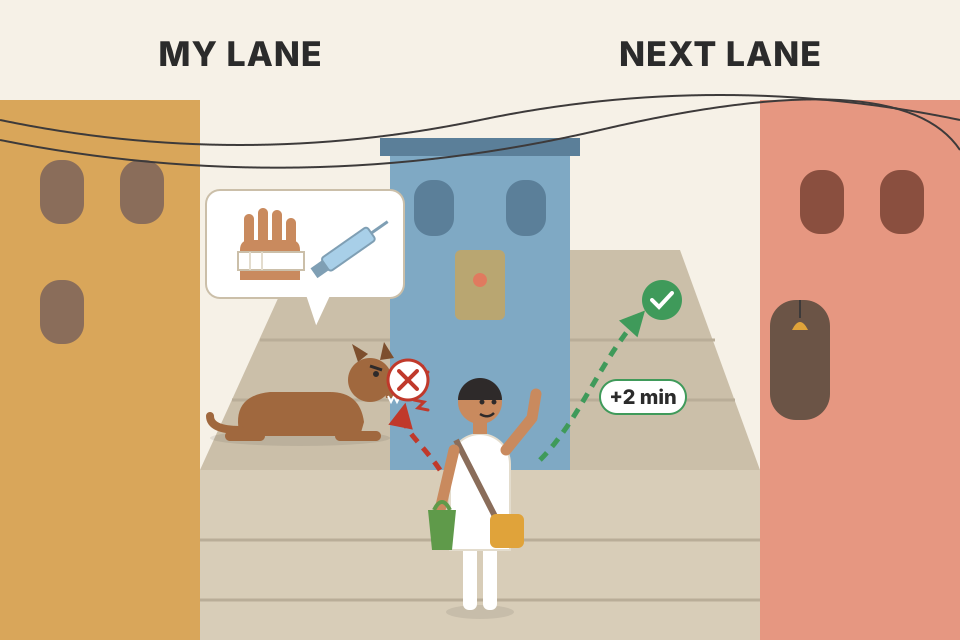
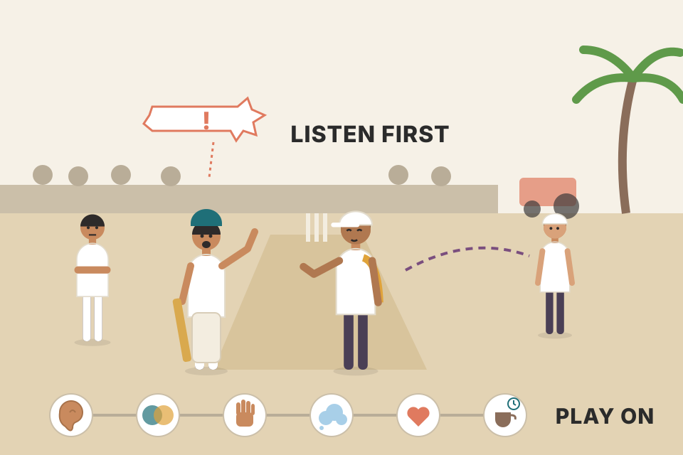
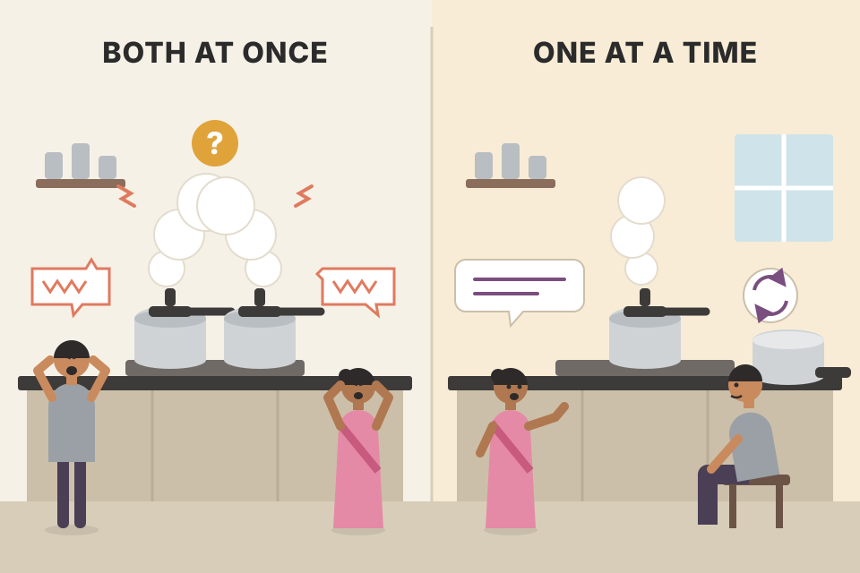

DALE CARNEGIE · HOW TO WIN FRIENDS · PART THREE · CHAPTER 1 · PDF p121–128
You Can't Win an Argument
If you lose an argument you have lost, and if you win it you have usually lost too: the other person is now hurt, defensive and more sure of their view than before. The way to come out ahead is to not have the fight.
Part Three of the book is about changing people's minds, and Carnegie opens it with a warning about the tool most of us grab first: arguing. He starts with himself, a young man at a London banquet who corrected a stranger's quotation in public and was quietly overruled by a friend who knew he was right. He admits he had been a lifelong debater, even a debating teacher, and concludes from thousands of arguments that winning one changes nobody. Then come the proofs: a truck salesman who sold nothing while winning every quarrel, and a tax consultant who got nowhere for an hour with a stubborn inspector until he stopped arguing and showed respect. The chapter closes with a practical checklist for keeping a disagreement from turning into a fight.
Principle 1 of Part Three
The only way to get the best of an argument is to avoid it.
How the chapter fits together
pdf p120–128 · read this first
Where it sits: the start of Part Three. pdf p120 is the title page of Part Three, "How to Win People to Your Way of Thinking". It is the longest Part of the book: twelve chapters (ch10 to ch21), one principle each, all about persuading someone without making them feel beaten. Part One taught how to handle people without hurting them (don't criticize, appreciate honestly, arouse an eager want), and Part Two how to make people like you, ending with "make the other person feel important". Part Three takes those ideas into the harder setting of disagreement. This first principle is the "stop doing" rule for the whole Part; the next one, "never tell a person they are wrong", narrows it to a single sentence. The full list of the Part's twelve principles is gathered at the end of ch21.
The argument as a chain. Each row follows from the one before.
Problemwe argue to change minds→minds don't change
Confessionthe Shakespeare quote at Ross Smith's banquet→Gammond: "avoid the acute angle"Carnegie the debater
Whylose → you losewin → they feel inferior, resent you→convinced against his will, same opinion still
Proof 1O'Haire: won arguments, sold no trucks→agrees with the buyer→star salesman
Proof 2Parsons vs tax inspector, $9,000→stops arguing, shows respect→return accepted as filed
WisdomBuddha: hatred ends by loveLincoln: give the dog the path
How tonine ways to keep a disagreement from becoming an argumentJan Peerce's pact
RulePrinciple 1: the only way to get the best of an argument is to avoid it
Limitsavoid the fight, not the disagreement→the rest of Part Three shows how to persuade instead
A word on terms. Carnegie separates a disagreement (two people see something differently, which is normal and even useful) from an argument (a contest where each side tries to beat the other). The principle is about the second. The book never draws the line in one sentence, but the "Bits and Pieces" list near the end (plate 7) is literally titled as advice on keeping the first from turning into the second.
01 · CARNEGIE'S OWN LESSON
The quotation at Ross Smith's banquet, and the friend who kicked him under the table
pdf p121–122
As in Part One, Carnegie begins with a story where he is the one in the wrong. Not wrong about the facts (he had those right) but wrong about what to do with them.
London · just after World War ICarnegie as Sir Ross Smith's managera banquet in Smith's honour
The guest of honour. Carnegie was then working as manager for Sir Ross Smith, an Australian who had been a celebrated wartime flying ace in Palestine. Soon after the war Smith flew halfway around the world in thirty days, something nobody had tried before. It made him famous: the Australian government gave him fifty thousand dollars, the King knighted him, and for a while nobody across the British Empire was talked about more.
The slip. At the dinner, the man in the next seat told a funny story built around the line "There's a divinity that shapes our ends, rough-hew them how we will", and said it came from the Bible. Carnegie knew, with total certainty, that it did not. And, as he admits, he did it only to feel big and show he knew better: he corrected the man, though nobody had asked him to. The storyteller refused to budge: Shakespeare? Ridiculous. It was the Bible.
The referee. On Carnegie's other side sat an old friend, Frank Gammond, who had spent years studying Shakespeare. The two disputants agreed to let him decide. Gammond listened, kicked Carnegie under the table, and announced that Dale was wrong and the gentleman was right: it was from the Bible.
The walk home. Afterwards Carnegie said, in effect, "Frank, you knew it was Shakespeare." Of course he did: Hamlet, Act 5, Scene 2. But they had been guests at a happy occasion. Why prove a man wrong? Would it make him like you? Why not let him keep his dignity? He had not asked for Carnegie's opinion and did not want it. Gammond summed it up in four words:
"Always avoid the acute angle."Frank Gammond, as quoted by Carnegie (pdf p122)
What Carnegie took from it. He had made the storyteller uncomfortable and put his own friend in an awkward spot, forcing him to choose between the truth and the mood of the evening. Not arguing would have cost him nothing. He calls it a lesson he never forgot.
Gammond's reasons, listed. They are the chapter in miniature:
Read the occasion. A celebration is not a quiz. The fact did not matter to anything at the table.
Ask what winning buys you. Proving him wrong would not make him like you.
Let him save face. Correcting a storyteller in the middle of his story embarrasses him in front of everyone.
Nobody asked. An unrequested correction is received as an attack, not as help.
Avoid the acute angle. Do not turn a smooth conversation into a sharp point of conflict.
Dated detail. The book measures Smith's fame by the reach of the Union Jack, meaning across the British Empire, which then included Australia. The phrasing throughout the chapter is also male by default ("the other man", "salesmen"); read it as "the other person".
Beyond the book: the flight and the quotation
The flight is widely recorded as the 1919 England-to-Australia air race, which Ross Smith won with his brother Keith and two mechanics in a Vickers Vimy, taking about 28 days. The prize was £10,000 from the Australian government, and both brothers were knighted. Carnegie's "thirty days" and "fifty thousand dollars" look like rounding and a currency conversion. The line itself is Hamlet speaking to Horatio near the end of the play, exactly where Gammond placed it.
Picture it

At a cousin's wedding reception in Kochi, an uncle tells everyone, with great relish, that Sachin scored his hundredth hundred against Pakistan. You know it was Bangladesh, in 2012. Correcting him in front of twenty relatives will not make the biryani taste better, will not make him love you, and will make your mother (sitting next to him) choose sides. The kind move is to laugh at the story and let the scorecard wait for a day it matters.
Where it breaks: at a wedding, the fact changes nothing. If the same uncle were about to book train tickets on the wrong date, you would speak up, gently and privately. Gammond's advice is about pointless corrections in public, not about letting real mistakes happen.
What's happening behind it
The book's explanation: Carnegie names his own motive honestly. He did not correct the man to help him; he did it to feel important and to look superior. That same hunger for importance (the theme of Ch.2 and Ch.9) is what makes the other man dig in: he too wants to feel important, and being corrected in public takes it away.
Beyond the book: a public correction turns a fact into a status contest. Once two people have taken sides in front of an audience, each one's standing depends on not backing down, so the evidence stops mattering. That is why the storyteller only grew more certain, and why Gammond could only end it by "losing" on Carnegie's behalf.
At work
The engineering version is the meeting where a manager or client says something slightly wrong ("Kafka guarantees exactly-once by default") while explaining something that does not depend on it. Interrupting to correct them in front of the room wins you a point and loses you the room. Ask yourself Gammond's questions: does this fact change the decision being made right now? If not, let it go, or mention it one-to-one later ("by the way, the exactly-once bit needs a config flag, worth knowing for the next design"). If it does change the decision, raise it as a question about the plan, not a correction of the person.
Interview angle. Interviewers sometimes misstate something on purpose or by accident. "Correcting the interviewer" is fine when it matters to your answer, but do it the Gammond way: no "actually", no triumph. "I may be thinking of a different version; my understanding is X. Shall I go with that?"
Worked example: the same slip, two replies
In a sprint demo, a product manager tells the visiting VP: "And since we moved to Postgres, all of this is in-memory, which is why it's so fast." (It is fast because of a new cache; Postgres is not in-memory.)
The acute angle
"Sorry, that's not right, Postgres isn't an in-memory database. It's the Redis cache."
The PM is embarrassed in front of a VP, the VP now wonders what else the PM gets wrong, and the PM will remember it.
Gammond's way
(Says nothing during the demo. Afterwards, privately:) "Great demo. One thing that might help next time: the speed-up is mostly the Redis layer we added, which is a nice story on its own."
The fact is fixed where it matters, and the PM gets a better line to use.
Connects to
Letting the other person save face becomes a principle in its own right: Part Four, Ch.5.
The next chapter narrows this one down to a single sentence you should never say: Part Three, Ch.2.
02 · THE CORE ARGUMENT
A born debater's verdict: you lose if you lose, and you lose if you win
pdf p122
Why he needed the lesson. Carnegie confesses he was a habitual arguer. As a boy he argued with his brother about everything. At college he studied logic and argument and entered debating contests. He jokes that he was born in Missouri, the state famous for "show me" (you have to prove it to me). Later he taught debating and argument in New York, and once, he says with some embarrassment, he even planned to write a book on it.
The verdict. Having since listened to, taken part in and watched the results of thousands of arguments, he decided there is only one way to come out on top: avoid the argument altogether, as you would avoid rattlesnakes and earthquakes.
The evidence he gives. Nine times out of ten, an argument ends with both people more convinced than ever that they were right. Arguing does not move people towards each other; it pushes each one further into their own corner.
Why nobody can win. Take the two outcomes in turn:
You lose the argument
Then you have simply lost. Your view did not prevail.
You win the argument
You tear their case apart and prove they don't know what they're talking about. You feel great. But they feel inferior, their pride is hurt, and they resent your win. And their opinion has not changed.
Carnegie sums it up with an old rhyme:
"A man convinced against his will / Is of the same opinion still."Rhyme quoted by Carnegie (pdf p122)
Beyond the book: where the rhyme comes from
Carnegie gives no source. The couplet is usually traced to Samuel Butler's 17th-century satirical poem Hudibras, which has a similar pair of lines about someone who "complies against his will"; the popular wording drifted over time.
Try it: play out the argument
You and a colleague disagree about whether to use GraphQL or REST for a new service. You decide to argue it out. Pick how it ends.
Try all three endings.
Picture it

Two neighbours in a Delhi housing society argue in the WhatsApp group about whose car is blocking the gate. One posts photos, timestamps and the parking rules, and "wins": nobody can answer him. The other goes quiet. Next week his kids stop playing with the winner's kids, his help stops passing on messages, and every society meeting has a cold edge. The winner has his parking spot and a neighbour who will now oppose everything he proposes.
Where it breaks: in the parking case there was a real rule, and the loser may have actually started parking properly. Carnegie's point is not that facts never move behaviour, but that the argument costs you the goodwill, and it is goodwill that decides the next ten disagreements.
What's happening behind it
The book's explanation: beating someone in an argument hurts their pride, and hurt pride produces resentment, not agreement. People can be silenced by logic without being persuaded by it; they simply wait, with the same opinion, for the next chance.
Beyond the book: psychologists have names for several pieces of this. Reactance (Jack Brehm, 1966) is the urge to resist when we feel our freedom to think for ourselves is under pressure; a forceful argument creates exactly that pressure. Research on belief polarisation (for example Lord, Ross and Lepper, 1979) found that people shown the same mixed evidence on a contested topic often came away more sure of their original view, because they picked apart the evidence against them and accepted the evidence for them: Carnegie's "nine times out of ten" in a lab. (Later studies show this "backfire" is not universal; people do update on facts when they do not feel attacked, which supports the chapter's real point.)
At work
Engineers are trained debaters: we review code, defend designs and love being correct. That makes us prone to Carnegie's old habit. Signs you are in an argument rather than a discussion: you are composing your rebuttal while they talk; you have started quoting documentation at them; you care more about who is right than about what ships. In a design review, "winning" by out-arguing a teammate often leaves you with a design they did not buy into and will not defend when it runs into trouble at 2 a.m.
Interview angle. "Tell me about a time you disagreed with a teammate on a technical decision." The weak answer is a debate you won. The strong answer shows how you understood their reasons, tested the disagreement against data or a small prototype, and kept the working relationship, whichever way it went.
Connects to
Why being corrected hurts so much: the desire to feel important in Ch.2.
Patrick O'Haire: the truck salesman who won every argument and sold nothing
pdf p122–123
Patrick J. O'Haireformer chauffeurselling trucks, badlylater: White Motor Company, New York
Who he was. O'Haire came to one of Carnegie's classes with little formal education and a great love of a fight. He had driven for a living and was now trying, without much luck, to sell trucks.
The real problem. A few questions showed what was going wrong: he kept quarrelling with the very people he was trying to sell to. If a buyer said anything bad about his trucks, he lost his temper and went for them. He won a lot of those arguments. Looking back, he put it neatly: he often walked out of an office pleased that he had told the man a thing or two, but he had told him something without selling him anything.
Carnegie's diagnosis. The job was not to teach O'Haire to talk better. It was to teach him to stop talking and stay out of verbal fights.
The new move. Now, when a buyer greeted him with "A White truck? Rubbish. I wouldn't take one free. I'm buying a Whose-It" (Carnegie's stand-in name for a rival brand), O'Haire agreed: the Whose-It is a good truck, made by a fine company and sold by good people; you won't go wrong with it.
Why it worked, in O'Haire's telling. The buyer had nothing left to say. He could not go on all afternoon insisting the Whose-It was the best when the salesman agreed. So the subject changed, and O'Haire could start talking about what was good about the White truck.
What used to happen. In the old days that opening remark made him see red. He would attack the rival truck, and the harder he attacked it, the harder the buyer defended it, and the more the buyer defended it, the more he talked himself into buying the competitor.
The result. O'Haire became one of the star salesmen of the White Motor Company in New York. He said he now wondered how he had ever sold anything before; he had wasted years arguing, and keeping his mouth shut paid.
Step through the story
Notice the mechanism. The buyer's knock on White trucks was not really information; it was an opening position. When O'Haire attacked it, the buyer had to defend it, and every sentence he spoke in its defence made it more his own. Agreement took away the thing he was pushing against. The book's phrase for the before-picture is the key line: the more the prospect argued, the more he sold himself on the rival.
Picture it

Tug-of-war at a school sports day. As long as you pull, the other team pulls back harder, and the rope does not move. If you suddenly let go, there is nothing for them to pull against; they stumble, the contest is over, and you are free to walk over and talk. O'Haire let go of the rope.
Where it breaks: in tug-of-war, letting go means you lose. In a sale, letting go of the argument is how O'Haire started winning, because the goal was never to defeat the buyer's opinion; it was to get a fair hearing for his own truck.
What's happening behind it
From the book: arguing against someone's choice forces them to defend it, and defending it strengthens it. Agreeing removes the fight so the conversation can move on to your own case. Carnegie's task with O'Haire was restraint, not technique.
Beyond the book: this matches what psychologists call self-persuasion: people are moved most by arguments they make themselves (Elliot Aronson wrote about this at length). When the buyer argued for the Whose-It, he was persuading himself. Sales trainers today teach a similar "agree and pivot" move ("feel, felt, found"), but note the honest version only works if the rival product really is decent. O'Haire's praise was believable because it was true; the Whose-It was a good truck.
At work
On a client call, the client says, "We're thinking of just using Firebase instead of your custom backend." The O'Haire reflex is to list Firebase's weaknesses, which makes the client defend Firebase and talk themselves into it. The Carnegie move: "Firebase is a solid choice; lots of teams ship fast on it. If it fits, you won't regret it." Then ask what matters most to them (cost at scale? data residency? custom business rules?) and talk about your option on those terms.
Inside the team: a junior says "We should rewrite this in Rust." Instead of a lecture on rewrite risk, agree with what is true ("Rust would kill this class of memory bug, you're right") and then ask what problem they are trying to solve. Often there is a smaller fix both of you like.
Interview angle. Product and solutions-engineering interviews love "the customer says your competitor is better; what do you do?". O'Haire is the answer's skeleton: acknowledge what is true about the competitor, do not attack it, then find out what the customer needs and show where you fit.
Worked example: the competitor objection
A prospective client on a sales call: "Honestly, we're leaning towards Supabase. It does everything you do."
Old O'Haire
"Supabase? Their row-level security is a nightmare and their support is slow. You'll be migrating off it in a year."
The client now explains why Supabase's security is fine and support has been great for them. Five minutes later they have argued themselves into signing with Supabase.
New O'Haire
"Supabase is a good product; a lot of teams are happy on it. If it fits your needs you won't go wrong. Can I ask what matters most for this project, so I can be honest about whether we're a better fit?"
The objection has nowhere to go, and the conversation moves to the client's needs, where your strengths can show.
Connects to
Getting people to say "yes, yes" early instead of "no": Part Three, Ch.5.
Talking in terms of what the other person wants: Part One, Ch.3.
Letting the other person do most of the talking: Part Three, Ch.6.
04 · TWO SAYINGS
Franklin's "empty victory", and William Jay, who was dead right
pdf p123–124
Franklin. Carnegie quotes Benjamin Franklin's advice, which in plain words says: if you argue, needle and contradict, you may win sometimes, but the win will be hollow, because you will never have the other person's goodwill.
"...it will be an empty victory..."Benjamin Franklin, as quoted by Carnegie (pdf p123)
The choice Carnegie puts to you. Which do you want: a victory that is academic and theatrical (it looks good and proves a point) or the person's goodwill? You can seldom have both. Note the word "seldom": he does not say never, but he wants you to see it as a trade-off and choose on purpose.
William Jay. Then a piece of comic verse that once ran in the Boston Transcript, a mock epitaph for a man called William Jay who died insisting on his right of way. The joke: he was completely in the right as he drove on, and he is exactly as dead as if he had been in the wrong.
Carnegie's application. You can be right, "dead right", all the way through an argument, and as far as changing the other person's mind goes, you will most likely achieve as little as if you had been wrong. Being right is not the same as being effective.
Picture it

A scooter at a Chennai junction has the green light. A water tanker, which clearly does not, is rolling through anyway. The rider can keep going because the law is on his side, or he can brake. If he keeps going he is right, completely right, and the hospital bill will not care. William Jay is every rider who treats "I have right of way" as if it were armour.
Where it breaks: on the road the price of being right is physical and instant. In an argument the price is slower and quieter (a colleague who stops sharing information, a client who does not renew), which is exactly why people keep paying it without noticing.
What's happening behind it
From the book: goodwill and victory pull against each other because victory requires a loser, and nobody feels goodwill towards the person who made them lose. Since the purpose of most arguments is to change what the other person thinks or does, a win that leaves them resentful has failed at its own purpose.
Beyond the book: negotiation research makes the same distinction between positions (what each side says it wants) and interests (why it wants it). Fisher and Ury's Getting to Yes (1981) argues that bargaining over positions turns into a contest of wills that damages the relationship, while exploring interests can find options both can accept. Franklin's "empty victory" is the position-win that loses the relationship.
At work
Classic "dead right" moments in engineering: insisting on the letter of the API contract when a partner team breaks it ("the spec says 400, not 422"), blocking a hotfix over style issues, or proving in a post-mortem that the other team's alert was the one that was mis-tuned. You may be right in every case. Ask Franklin's question before pressing on: is the point worth more than this team's willingness to help you next quarter? Often the right move is to fix it quietly, write it down, and keep the relationship.
Interview angle. "Describe a time you had to choose between being right and getting the project done." A good answer names the trade-off openly: what you gave up, why the goodwill (or the outcome) mattered more, and how you still made sure the real risk was handled.
Which would you rather have?
Pick a response to see how Carnegie would judge it.
Connects to
Franklin turns up again in the next chapter, giving up his habit of flat contradiction: Part Three, Ch.2.
Frederick Parsons and the stubborn tax inspector: an hour of facts, then three minutes of respect
pdf p124–125
Frederick S. Parsonsincome-tax consultanta government tax inspector$9,000 at stakeone hour of wrangling
The dispute. Parsons had been arguing for an hour with a tax inspector over a $9,000 item. Parsons said it was a bad debt that would never be collected, so it should not be taxed. The inspector waved that away: bad debt, nonsense; it gets taxed.
The wall. Parsons described the inspector to Carnegie's class as cold, arrogant and stubborn. Reasons and facts got nowhere; the longer they argued, the more stubborn the inspector grew.
The switch. So Parsons decided to drop the argument, change the subject, and show the man some appreciation. He said, roughly: this must be a small matter next to the really hard decisions you have to make; I have studied tax too, but only from books, while you learn it on the front line; I sometimes wish I had a job like yours, it would teach me a lot. Parsons stressed that he meant every word.
What happened. The inspector sat up, leaned back and talked for a long time about his work, including clever frauds he had caught. His tone grew friendly, and soon he was telling Parsons about his children. As he left, he said he would think the problem over and give his decision in a few days.
The result. Three days later he came to Parsons's office and said he had decided to leave the tax return exactly as it was filed. The $9,000 stayed untaxed.
Carnegie's explanation. The inspector was showing one of the commonest human weaknesses: he wanted to feel important. While Parsons argued with him, the only way he could feel important was by loudly asserting his authority, so the argument fed his stubbornness. As soon as Parsons acknowledged his importance and stopped arguing, the inspector no longer needed to prove anything, and became a sympathetic, kindly person.
"I meant every word I said."Frederick Parsons, as quoted by Carnegie (pdf p124)
Why that line matters. Without it, the story reads like a flattery trick. Carnegie built Part Two (and Ch.2) on the difference between sincere appreciation and flattery, and Parsons's compliment works because it was true: the inspector did have real, hard-won experience that Parsons did not.
Picture it

You are at the RTO office in Bengaluru, and the clerk says your form is wrong and you must come back tomorrow. You argue: the website said this form, you took a half-day off. He folds his arms; the counter is his kingdom. Then you change tack: "Sir, you must see hundreds of these a day, you'd know the right way better than the website. What would you do?" He relaxes, tells you about the website's mistakes, and fixes your form with a pen.
Where it breaks: it only works if you mean it, as Parsons did. A clerk who senses sarcasm or a cheap trick will dig in harder. And sometimes the form really is wrong, and no amount of respect will change the rule; respect gets you a fair hearing, not a guaranteed yes.
What's happening behind it
The book's explanation: the hunger to feel important (Part One, Ch.2) can be fed in two ways. Argue with someone in authority, and they feed it by using their authority against you. Acknowledge them, and the hunger is satisfied, so they can afford to be generous.
Beyond the book: social psychologists describe a similar pattern as threat to status: people whose role or competence feels challenged become more rigid and rule-bound, while people who feel respected are more flexible. Notice too that the inspector did not decide on the spot. Parsons gave him time, and the inspector got to make the decision himself, privately, three days later, so he never had to be seen backing down. That is the "postpone action" idea from plate 7, at work before Carnegie lists it.
At work
Your "tax inspectors" are the gatekeepers: the security reviewer blocking your release, the DBA refusing a schema change, the procurement officer stalling a vendor contract. Arguing harder about why the rule should not apply usually makes them hold the rule tighter. Try the Parsons sequence: stop the debate, show real respect for what their job protects ("you've seen far more breaches than I have; what would make you comfortable with this?"), let them talk, and give them time to decide. You often get the exception, or a better solution, that the argument never would.
Interview angle. "Tell me about a time you had to convince someone who had the power to say no." Describe how you stopped pushing, learned what they were protecting, acknowledged their expertise sincerely, and gave them room to decide. Name the result concretely, as Carnegie does ($9,000, three days).
Rewrite it
Pick a blunt message to a gatekeeper, decide how you would rewrite it, then reveal a Carnegie-style version and what changed.
Connects to
Make the other person feel important, and do it sincerely: Part Two, Ch.6.
Letting the other person do the talking (the inspector's frauds and children): Part Three, Ch.6.
06 · TWO VOICES OF WISDOM
Buddha on ending hatred, and Lincoln's advice to give the dog the path
pdf p125
Buddha. Carnegie quotes a line attributed to the Buddha and then extends it to disagreements:
"Hatred is never ended by hatred but by love."The Buddha, as quoted by Carnegie (pdf p125)
In the same way, he says, a misunderstanding is never ended by an argument. It ends through four things: tact, diplomacy, conciliation (making peace, meeting halfway) and a sympathetic wish to see the other person's point of view.
Lincoln's reprimand. Lincoln once rebuked a young army officer for getting into a fierce quarrel with a fellow officer. His advice, retold in plain words:
No time for feuds. Anyone who wants to make the most of himself cannot spare time for personal quarrels.
The price is too high. Still less can he afford what they cost: a soured temper and lost self-control.
Yield the big things where your claim is only equal. If both sides have an equal right, give way.
Yield the small things even when they are clearly yours. Being in the right is not enough reason to fight over something minor.
The dog. Better to step aside and let a dog have the path than to be bitten fighting over who has the right of way. Even killing the dog afterwards would not heal the bite.
How it fits. Lincoln's dog is William Jay's right of way again, from the other side: the point is not who deserves the path, it is what the fight would cost you. And the last line adds something new: a win after the damage is done does not undo the damage.
Beyond the book: the sources
Carnegie gives no source for either quote. The Buddha's line is a well-known verse from the Dhammapada (verse 5), usually translated along the lines of "hatred is never appeased by hatred; by non-hatred alone is it appeased." The Lincoln passage is widely attributed to a letter he wrote in October 1863 to Captain James M. Cutts, who had been court-martialled after a quarrel with another officer.
Picture it

A street dog lies across a narrow lane in an old part of Varanasi, growling. It is your lane; you live here, and the dog has no right to block it. You could push through to make the point. Or you could take the next lane, two minutes longer. Lincoln's advice is the second lane, and his extra point is the one people forget: even if you won the standoff, a dog bite is still a dog bite (and an anti-rabies course).
Where it breaks: some lanes you cannot give up (the only road to your child's school, a safety rule, someone's dignity). Lincoln's own rule says yield equal big things and minor things that are yours; it does not say give way on everything.
What's happening behind it
From the book: Buddha and Lincoln make the same point from two directions. Buddha: answering hostility with hostility only feeds it. Lincoln: a quarrel costs the quarreller (temper, self-control, time) whatever the outcome. Carnegie's addition is the practical method: tact, diplomacy, conciliation and genuine interest in the other side's view.
Beyond the book: conflict researchers describe conflict spirals: each hostile move provokes a slightly stronger one, until both sides are fighting about the fight rather than the original issue. The cheapest place to break a spiral is the first move, which is why Lincoln and Carnegie both emphasise yielding early on things that do not matter much.
At work
Lincoln's grid is a decent filter for code-review and design debates. Small and clearly yours: naming, formatting preferences, which of two equally good libraries to use. Yield, even if you are right; it is not worth the bite. Big but equal: two sound architectures with different trade-offs. Give way, or let data decide, rather than turning it into a personal contest. Big and clearly not equal: a security hole, data loss, a legal requirement. That is not in Lincoln's "yield" list, and you should hold the line, calmly.
Interview angle. "How do you decide which battles to fight?" Lincoln's rule makes a crisp answer: you sort disagreements by how much they matter and how clear the case is, give way freely on the minor ones, and spend your credibility only where it counts.
Connects to
Lincoln's own lesson about criticism (the near-duel and the unsent letter): Part One, Ch.1.
"Try honestly to see things from the other person's point of view": Part Three, Ch.8.
Being sympathetic to the other person's ideas and desires: Part Three, Ch.9.
07 · THE TOOLKIT
Nine ways to keep a disagreement from becoming an argument
pdf p125–126, p128
The practical heart of the chapter. Carnegie passes on a list from an article in Bits and Pieces, a small inspirational booklet (his footnote on pdf p128 gives the publisher as The Economic Press of Fairfield, New Jersey). Notice the framing: the aim is not to avoid disagreement, which the first item actually welcomes, but to stop it turning into an argument. Each item below is the list's heading with its advice in our own words.
#
Suggestion
What it means
In an engineering team
1
Welcome the disagreement
If two partners always agree, one of them is unnecessary. A point you had not considered is a gift: it may save you from a serious mistake.
"Good catch, I hadn't thought about the retry storm." The reviewer who disagrees is doing free QA.
2
Distrust your first instinctive impression
The reflex when challenged is self-defence, and that reflex is rarely your wisest self, so stay calm and treat it with suspicion.
Notice the urge to type a reply in 10 seconds. That reply is usually the defensive one.
3
Control your temper
What makes someone angry shows how big or small they are.
Getting heated over tabs vs spaces says more about you than about the code.
4
Listen first
Hear the whole objection before saying a word; interrupting to defend yourself only puts up walls, while waiting builds understanding.
In a design review, let them finish the whole objection before answering any part of it.
5
Look for areas of agreement
Once you have heard them out, start with the points you agree on.
"We both want p99 under 200 ms and no new infra. We differ on caching."
6
Be honest
Look for places where you can admit you were wrong, and say so. Apologise for your mistakes. It disarms the other side and lowers defensiveness.
"You're right that my estimate ignored the migration. That's on me."
7
Promise to think over their ideas and study them carefully
And mean it. They may be right. Agreeing to consider their points now is far easier than charging ahead and later being reminded that they warned you and you ignored them.
"Let me prototype your approach before we decide." The cheapest insurance against "we told you so".
8
Thank your opponents sincerely for their interest
Someone who bothers to push back is invested in the same problem; see them as allies, and they may end up as friends.
"Thanks for pushing on this, it made the design better." Say it in the doc, not only in your head.
9
Postpone action to give both sides time to think
Propose picking it up again in a few hours or tomorrow, once everyone has the facts, and use the gap to question yourself honestly (below).
"Let's sleep on it and pick it up at tomorrow's stand-up with the load-test numbers."
The hard questions to ask yourself before the follow-up meeting (suggestion 9), in our wording:
What if they are right, even about part of it?
What is the strongest, fairest version of their case?
Does my next move fix anything, or does it just make me feel better?
After it, will we be further apart or closer together?
Would people I respect think more of me, or less, if they watched?
Suppose I come out on top: what does that cost me?
Would this fade away on its own if I said nothing?
Could this awkward moment be a chance for something good?
Picture it

A good umpire in a heated village cricket final. When a batsman disputes a decision, he does not shout back. He lets the man say his piece (listen first), agrees the ball was close (areas of agreement), admits he might have been unsighted at the other end (be honest), says he will check with the square-leg umpire (promise to think it over), thanks the captain for raising it calmly (thank them), and gives the final word at the drinks break (postpone). The match goes on, and nobody storms off the field.
Where it breaks: an umpire's word is final and the game needs a decision within seconds. Most workplace disagreements are not like that; you usually have far more time to postpone and think than an umpire does, which makes the list easier to use, not harder.
What's happening behind it
From the book: every item lowers the other person's need to defend themselves (listening, agreeing, admitting error, thanking) or lowers yours (welcoming the disagreement, distrusting your first reaction, controlling your temper). Postponing gives both sides time to change their minds in private, which is far easier than doing it on the spot in front of someone.
Beyond the book: the "distrust your first impression" item lines up with what is often called an amygdala hijack, Daniel Goleman's popular term for the fast threat response that can swamp careful thinking. Taking a pause gives the slower, reasoning part of the brain time to catch up. And the "think of them as people who want to help" item echoes Amy Edmondson's research on psychological safety: teams that treat dissent as useful catch more errors.
At work
The list maps neatly onto an RFC or design-doc review. Write "Open questions and disagreements welcome" at the top (1). When a sharp comment lands, wait before replying (2, 3). Reply only after reading the whole thread (4). Start your reply by stating what you agree on (5), concede what is fair (6), and commit to trying their idea (7). Thank reviewers by name in the doc's changelog (8). For anything still contested, schedule a short call for the next day with data (9), and run through the hard questions privately first.
Interview angle. "How do you handle disagreements in code review?" Pick three or four items and give a concrete example of each. It sounds like a mature process, because it is one.
Self-audit: in my last real disagreement, did I…
Think of a specific one from the last two weeks (work or home). Tick what you actually did, not what you meant to do.
Jan Peerce's pact: when one yells, the other listens. Then Principle 1
pdf p126–128
Jan Peerceopera tenormarried nearly fifty years
The pact. The last story is a short one from married life. The opera tenor Jan Peerce said that he and his wife had made an agreement long ago and kept it however angry they got with each other: when one of them yells, the other one listens. His reason was simple. When two people shout at once nothing is communicated; there is only noise and bad feeling.
Why it is a good place to end. It turns the whole chapter into a rule two people can actually keep. You cannot always stop the other person from starting an argument, but you can refuse to make it a two-sided one. If only one person is shouting, it is not yet an argument, and the listener is doing suggestion 4 from the list ("listen first") under the hardest conditions.
A note for today. The pact assumes two people of equal standing who both want the marriage to work. It is a rule for ordinary flare-ups, not a rule that anyone should silently absorb shouting that is abusive or one-sided.
Principle 1 of Part Three
The only way to get the best of an argument is to avoid it.
What "avoid it" means, taken from the chapter's own stories.
Story
The argument on offer
How it was avoided
Outcome
Gammond at the banquet
Bible or Shakespeare?
Gave the "wrong" verdict on purpose; explained privately
Evening saved; Carnegie learns the lesson
O'Haire
"Your trucks are no good"
Agreed the rival was good, then talked about his own
Star salesman
Parsons
Is $9,000 a bad debt?
Stopped arguing, showed sincere respect, gave time
Return accepted as filed
Lincoln's advice
A quarrel between officers
Yield equal big things and small things that are yours
No bite to heal
Jan Peerce
A marital row
One yells, the other listens
Nearly fifty years married
Read it carefully. In every story, avoiding the argument did not mean giving up the goal. O'Haire still sold his truck; Parsons still kept his $9,000 untaxed. What they gave up was the contest: the need to prove the other side wrong to their face. That leaves room for the rest of Part Three, which is about how to win people to your way of thinking once the fight is off the table.
Picture it

A pressure cooker and its whistle again, but for two people: if both cookers in a kitchen whistle at once you cannot hear anything, and nobody can tell which dal is ready. Peerce's pact is like a couple in a Mumbai one-room flat agreeing that only one cooker goes on the stove at a time. One lets off steam; the other waits and listens. Then they swap.
Where it breaks: a cooker's whistle is over in seconds. A person who is yelling may need much longer, and listening to someone in full flow takes real self-control. The pact also only works if both people keep it; a cooker cannot decide to stop being heard.
What's happening behind it
From the book: the whole chapter rests on one observation: arguing hardens people's views and hurts their pride, so even a victory loses what you wanted (their agreement or goodwill). Avoiding the argument keeps the person's pride safe, which is the only condition under which a mind changes.
Beyond the book: John Gottman's long-running studies of married couples found that what predicts trouble is less whether couples disagree than how: criticism, contempt, defensiveness and stonewalling. Couples who stay together tend to make "repair attempts" and to soften the start of a hard conversation. Peerce's pact is a simple, home-made repair rule.
At work
The Peerce rule for incidents and escalations: when an angry stakeholder joins the call, someone on your side listens and takes notes while they vent; nobody explains or defends until they have finished. Then summarise what you heard. Most of the heat goes out in the first two minutes if nobody pushes back. The same works in 1:1s when a report is upset: let them finish, say what you heard, and save the facts for the second half.
Interview angle. Behavioural rounds often ask "Tell me about a time you dealt with an upset customer or stakeholder." The strongest stories begin with listening and letting them finish, not with the clever explanation you gave. Saying "I let them talk, then repeated their main concern back before I said anything else" shows exactly this principle.
Reflect, then reveal
Think of one disagreement you are in right now (a design choice, a deadline, something at home). Write your side of it in a sentence or two, as strongly as you like. Nothing is saved.
Worked example: a deadline disagreement, two ways
Your manager says the payments refactor must ship in two weeks. You are sure it needs four.
Argue it out
"Two weeks is impossible. Whoever promised that didn't ask engineering. I've done this before and I'm telling you it's four."
The manager now has to defend a promise made to their boss. They dig in: "Then we cut scope, but it ships in two." You have "won" nothing and lost trust.
Avoid the argument
"I get why two weeks matters, the partner launch is real. Can I take a day to break it down? If I'm wrong about the size, great. If not, I'll bring options, like shipping the new API first and migrating old clients after."
Agreement first, a promise to think, a postponement with data. The next conversation is about options, not about who is right.
Connects to
The next principle: show respect for the other person's opinions and never tell them they are wrong: Part Three, Ch.2.
All twelve principles of Part Three in one list: end of Part Three, Ch.12.
Part Three begins here. "How to Win People to Your Way of Thinking": twelve principles (ch10–ch21) on persuading without defeating. This first one says what not to do.
Carnegie's own mistake. At a London banquet for Sir Ross Smith he corrected a stranger's claim that a Shakespeare line came from the Bible. His friend Frank Gammond, a Shakespeare expert, ruled against him on purpose, then explained: it was a festive occasion, nobody asked, let the man save face; "always avoid the acute angle."
A debater's verdict. After a youth of arguing, college debating and even teaching it, Carnegie concluded the only way to get the best of an argument is to avoid it. Nine times in ten both sides leave more convinced. If you lose you lose; if you win, the other person feels inferior and resentful, and is "of the same opinion still".
O'Haire. Won arguments with buyers and sold nothing. Learned to agree that the rival truck was good, which left the buyer nothing to argue about; became a star salesman for White Motor Company.
Franklin and William Jay. Arguing gives an empty victory without goodwill; you can seldom have both. You can be "dead right" and achieve as little as if you were wrong.
Parsons. An hour of facts failed with a stubborn tax inspector over $9,000. Sincere appreciation of the inspector's experience changed his mood; three days later he left the return as filed. The inspector wanted to feel important and stopped asserting authority once he was respected.
Buddha and Lincoln. Hatred ends by love; misunderstanding ends by tact, diplomacy, conciliation and a sympathetic wish to see the other view. Lincoln: no time for feuds; yield equal big things and small things that are yours; better to give the dog the path than be bitten, and killing the dog will not cure the bite.
Nine ways (Bits and Pieces) to keep a disagreement from becoming an argument: welcome it, distrust your first reaction, control your temper, listen first, look for agreement, be honest, promise to think it over, thank them, postpone and ask yourself hard questions.
Jan Peerce's pact: when one yells, the other listens.
Principle 1 of Part Three: the only way to get the best of an argument is to avoid it. Avoid the contest, not the goal and not the disagreement.
Term or phrase
Meaning on this page
Where
Principle 1 (Part Three)
The only way to get the best of an argument is to avoid it.
pdf p127
Disagreement vs argument
Seeing things differently (useful) vs a contest to beat the other side (harmful).
pdf p125
Avoid the acute angle
Gammond's advice: don't turn a smooth exchange into a sharp point of conflict.
pdf p122
Convinced against his will
A person beaten in argument keeps the same opinion.
pdf p122
"Told him something, sold him nothing"
O'Haire's verdict on winning arguments with customers.
pdf p123
Whose-It
Carnegie's placeholder name for the rival truck O'Haire learned to praise.
pdf p123
Empty victory
Franklin: a win that loses the other person's goodwill.
pdf p123
Dead right
William Jay's epitaph: being right does not save you from the result.
pdf p124
Feeling of importance
Why the tax inspector dug in, and why respect softened him.
pdf p124–125
Give the dog the path
Lincoln: yield rather than be bitten; a later win does not heal the bite.
pdf p125
Bits and Pieces list
The nine suggestions and the hard questions.
pdf p125–126, p128
When one yells, the other listens
Jan Peerce's marriage pact.
pdf p126
10 · USE IT
Practice this week
beyond the book
Small exercises, each with a way to tell whether it worked. The exercises are ours; the ideas are the chapter's.
Spot the acute angle. For three days, notice every time you feel the urge to correct someone on a point that does not change any decision (a date, a quote, a spec detail in passing). Let at least three go. Worked if: nothing bad happened, and you noticed how often the urge came from wanting to look right.
The O'Haire opener. The next time someone criticises your idea or product, start your reply by agreeing with the true part of what they said ("That's a fair point about latency"). Worked if: they stop repeating the objection and the conversation moves forward.
Listen to the end. In one meeting, do not reply to any objection until the person has completely finished. Then summarise it in one sentence before answering. Worked if: they say "yes, exactly", and your answer is shorter than usual.
Postpone one decision. When a disagreement gets warm, suggest coming back tomorrow with data. Before then, write answers to the hard questions. Worked if: the second conversation is calmer, or one of you changed your mind privately.
Lincoln's sort. List the disagreements you are currently in. Mark each small or big, and clearly yours or equal. Yield one that is small. Worked if: you feel lighter and the relationship warms a little.
The Peerce pact at home. Agree with your partner, a parent or a flatmate that when one person raises their voice, the other just listens until they finish. Worked if: the next flare-up ends faster than the last one.
11 · LIMITS
Where it can go wrong
pdf p121–126 · plus beyond the book
The book's own caveats first.
Disagreement is welcome. The first of the nine suggestions is to welcome the disagreement, and the slogan about two partners who always agree says plainly that dissent is valuable. The principle is against arguments, not against differing views.
"Nine times out of ten", "seldom". Carnegie's claims are not absolute. He says arguments usually harden views and that you can seldom have both the victory and the goodwill. There will be cases where a debate does change a mind.
Sincerity is part of the method. Parsons says he meant every word of his compliment. O'Haire praises a rival that really was a good truck. Insincere agreement or flattery is not what the chapter teaches.
The goal is not abandoned. O'Haire still sold, Parsons still kept the $9,000 untaxed, and the list ends with a follow-up meeting where the facts are brought in. Avoiding the argument is a route to the goal, not a surrender.
Lincoln yields selectively. His rule covers big things where both sides have equal rights and small things that are yours, not everything.
Beyond the book: our critique
Conflict avoidance is a real failure mode. Teams that never argue often make worse decisions; Patrick Lencioni's The Five Dysfunctions of a Team lists "fear of conflict" as one of them. The healthy version of this chapter is vigorous debate about ideas with no contest between people. If "avoid the argument" means nobody voices a concern, the principle has been misread.
Some disagreements need a decision, not harmony. A security flaw, a data-loss bug, a legal requirement: these are Lincoln's "not equal" cases. Raise them calmly, follow the nine steps, but do not let the wish to avoid an argument mean shipping something unsafe. Practices like "disagree and commit" exist for when a team must move on after a real disagreement.
"It's a good truck" can drift into dishonesty. Praising a competitor you think is poor, or agreeing with a claim you know is false, is not tact. Agree only with what is true.
Power changes the picture. Gammond could "lose" on Carnegie's behalf because nothing was at stake. Someone with less power (a junior engineer, a new hire) may find that always yielding means never being heard. Postponing and bringing data (suggestion 9) is safer than staying silent.
The Peerce pact needs two equals. As a mutual agreement in a healthy relationship it is wise; as advice to one person to absorb another's repeated yelling it is not.
Culture shifts the dial. In some settings (many Indian families and offices among them) openly contradicting an elder or a senior is already rare, and the risk is the opposite: real objections never get raised. There, the most useful parts of the chapter are "welcome the disagreement" and "postpone with facts", so the issue still gets aired without anyone losing face. In very direct cultures, too much agreeing can read as evasive.
Evidence is anecdotal. The chapter argues from stories, mostly from Carnegie's own students. Later research on reactance, belief polarisation and negotiation mostly supports the direction of the claim, but the stories are illustrations, not data.
12 · TEST YOURSELF
Check yourself
pdf p121–128
Try to answer before opening each one. The first half is story recall; the second half is using the principle.
1. What happened at the banquet for Sir Ross Smith, and what did Frank Gammond do?
A guest told a story built on a line he said was from the Bible. Carnegie, to feel important, corrected him: it was Shakespeare. The man insisted. They asked Gammond, a Shakespeare scholar, who kicked Carnegie under the table and said the gentleman was right. On the way home he confirmed it was Hamlet, Act 5, Scene 2, and explained why he had sided with the stranger.
2. What reasons did Gammond give for not proving the man wrong?
They were guests at a festive occasion; proving him wrong would not make him like Carnegie; the man should be allowed to save face; he had not asked for Carnegie's opinion and did not want it; and "always avoid the acute angle".
3. Why was Carnegie an unlikely person to give this advice?
He had been a lifelong arguer: with his brother as a boy, in college logic and debating contests, as a teacher of debating in New York, and he had once planned a book on argument. He jokes that being from Missouri, the "show me" state, he always had to be shown.
4. Explain "you can't win an argument" in two sentences.
If you lose, you have lost. If you win, the other person feels inferior and resentful and keeps the same opinion, so you have lost their goodwill and not changed their mind.
5. What was Patrick O'Haire's problem, and what did he start doing instead?
He argued with buyers who criticised his trucks, won the arguments and sold nothing; his attacks on rival trucks made buyers defend and sell themselves on the competitor. Carnegie trained him to stop talking. He began agreeing that the rival "Whose-It" was a good truck from a fine company, which left the buyer nothing to argue against, and then talked about the White truck's strengths. He became a star salesman for White Motor Company.
6. What do Franklin's "empty victory" and the William Jay verse each add?
Franklin: arguing and contradicting may win sometimes, but you lose the other person's goodwill, so the win is hollow; Carnegie adds you can seldom have both. William Jay: he was dead right about his right of way and just as dead as if he had been wrong; being right in an argument does not mean you will change anyone's mind.
7. How did Frederick Parsons win the $9,000 tax dispute?
After an hour of facts and argument made the inspector more stubborn, Parsons stopped arguing and sincerely praised the inspector's practical experience compared with his own book learning. The inspector relaxed, talked about frauds he had uncovered and his children, said he would think it over, and three days later left the return exactly as filed.
8. What is Carnegie's explanation for the inspector's change?
The inspector wanted to feel important. While argued with, he got that feeling by asserting authority. Once his importance was acknowledged and the argument stopped, he no longer needed to, and became sympathetic and kind.
9. What did Lincoln tell the young officer?
Someone who wants to make the most of himself cannot spare time for personal quarrels or afford their costs (a spoiled temper, lost self-control). Yield big things where your right is only equal, and small things even if clearly yours. Better to let a dog have the path than be bitten; killing the dog does not cure the bite.
10. List the nine Bits and Pieces suggestions.
Welcome the disagreement; distrust your first instinctive impression; control your temper; listen first; look for areas of agreement; be honest (admit errors, apologise); promise to think over their ideas and mean it; thank them sincerely for their interest; postpone action so both sides can think, and ask yourself the hard questions.
11. Application: in a design review, a colleague says your event-driven design is "over-engineered". What do the first three sentences of your reply look like?
Agree with what is true ("You're right that it adds moving parts"), ask to hear the full concern ("What would you do instead?"), and promise to think it over ("Let me compare both against the load numbers and come back tomorrow"). No rebuttal yet.
12. Application: a client says "your competitor is cheaper and better". What would O'Haire do?
Agree the competitor is a solid option and that the client would not go wrong with it; then move the conversation to what the client most needs, and show where your product fits. Do not attack the competitor; that makes the client defend it and sell themselves on it.
13. Application: does this principle mean a senior engineer should not push back on an unsafe release?
No. The chapter welcomes disagreement and never asks you to give up the goal. Lincoln yields only equal big things and minor things. On a real safety issue, hold the line, but do it with the nine steps: listen, find the shared goal, be honest, bring data, take time if possible. Avoid the contest, not the concern.
14. Interview: "Tell me about a time you disagreed with your manager." How does this chapter shape a strong answer?
Show that you listened to their reasons, said what you agreed with, raised your concern as a question with evidence, gave it time (a follow-up with data), and kept the relationship whatever the result. Avoid a story whose high point is you winning the debate.
15. What is Jan Peerce's pact, and why does it work?
When one spouse yells, the other listens. If both yell, nothing gets communicated, only noise and bad feeling. One person venting while the other listens cannot become an argument.
13 · SOURCES
References
pdf p120–128
Book pages and other sources used on this page
Dale Carnegie, How to Win Friends and Influence People, revised edition (1981; Simon & Schuster 2009 printing), Part Three, Chapter 1, "You Can't Win an Argument", pdf p121–128 (Part Three title page pdf p120). Stories by page: Ross Smith banquet and Frank Gammond p121–122; Carnegie the debater, "you can't win an argument", the couplet p122; Patrick J. O'Haire p122–123; Franklin p123; William Jay (Boston Transcript) p124; Frederick S. Parsons p124–125; Buddha and Lincoln p125; Bits and Pieces suggestions p125–126; Jan Peerce p126; Principle 1 p127; Bits and Pieces footnote p128.
Beyond the book (named where used): J. Brehm, A Theory of Psychological Reactance (1966); C. Lord, L. Ross, M. Lepper, "Biased assimilation and attitude polarization" (1979); E. Aronson on self-persuasion; R. Fisher and W. Ury, Getting to Yes (1981); D. Goleman, Emotional Intelligence (1995); A. Edmondson on psychological safety; J. Gottman on marital conflict and repair; P. Lencioni, The Five Dysfunctions of a Team (2002).
Historical and textual notes (Beyond the book): the 1919 England-to-Australia air race won by Ross and Keith Smith; Shakespeare, Hamlet, Act 5, Scene 2; Samuel Butler, Hudibras (source usually given for the couplet); the Dhammapada, verse 5; Lincoln's letter to Capt. James M. Cutts, October 1863 (usual attribution of the dog passage).